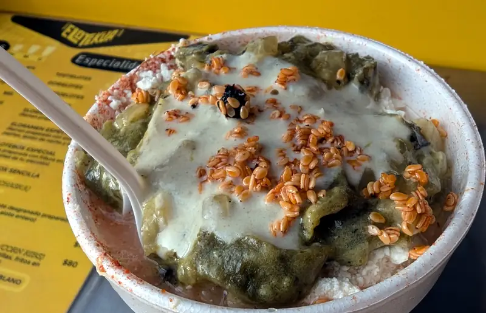
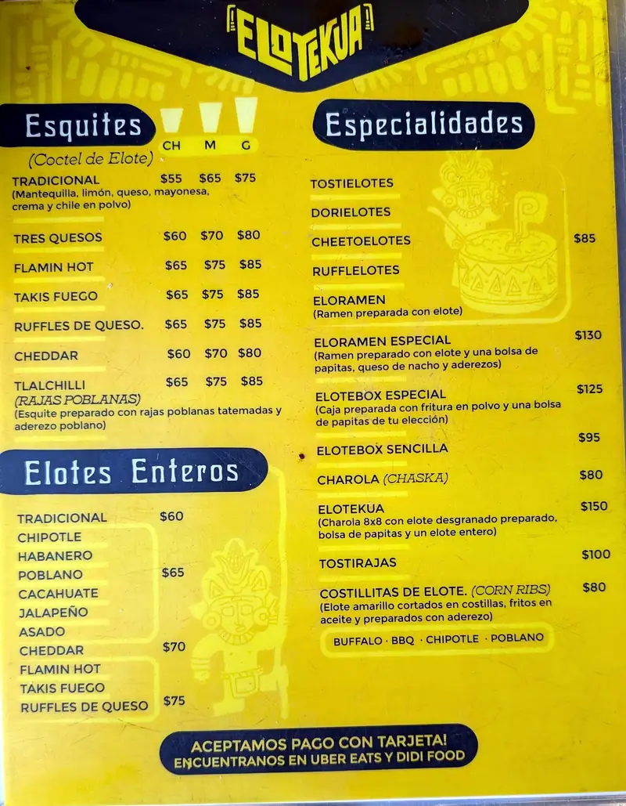
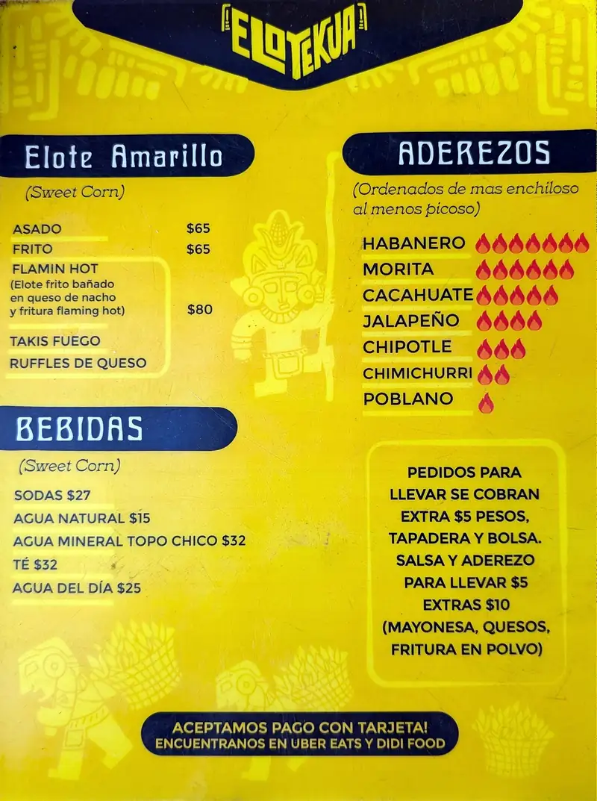
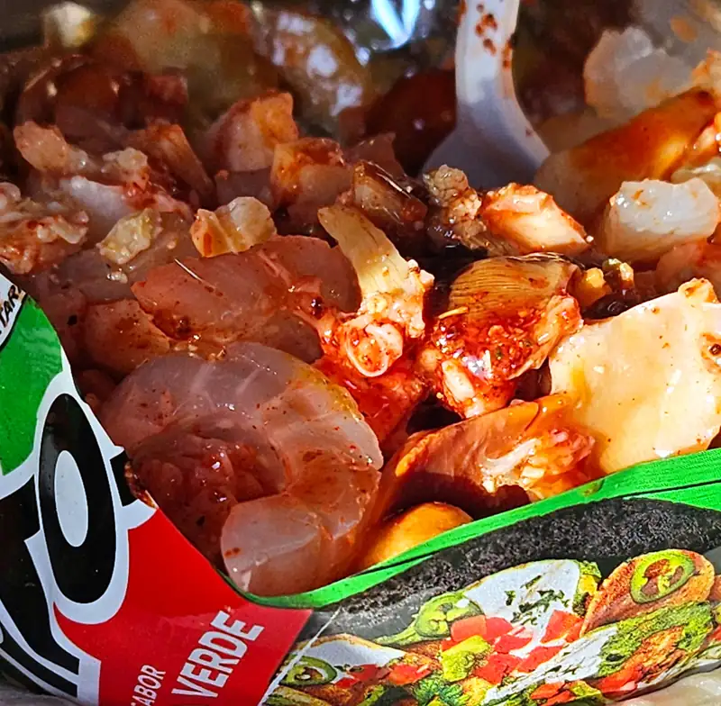
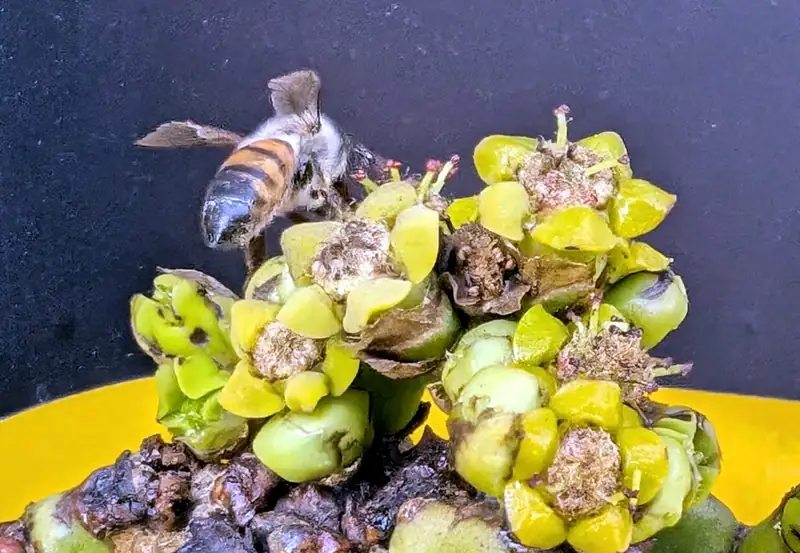

Elotekua y tostitos del malećon
Entre las tantas y tantas cosas que no te esperas que sea diferente en otro país es el elote! --- sí, estoy de acuerdo, cuando estaba chamaco me peleaba por los elotes amarillos que a veces compraban para el caldo de res o para comer cocidos como comíamos muy seguido. Pero pues sí, esto sí que no es Kansas, Dorothy; irónicamente los elotes que tanto peleaba de chamaco ahora son los ÚNICOS que hay! - y la neta, en cóctel (así le decimos a los esquites|elote en vaso|chascas en mi rancho. No peleen.) pues... no saben buenos, a pesar de la desilusión del yo de 7 años. Ah, pero estando en Ensenada, además de lo "típico" pues también lo no-típico sabe mejor que en Texas. Y los elotes aquí son como debe ser: con elote blanco, que si no lo has probado, es más duro, mucho menos dulce y como más almidonoso, pero como no es dulce, se presta mucho más a un uso como el cóctel, que más bien es picante-salado.
Para nuestra buena fortuna, tenemos una experta local en la materia que aunque parece chiste, es una anécdota que se ha repetido muchas, muchas veces: si le dices vamos por un elote, deja inmediatamente lo que esté haciendo para ir; así que se puede confiar en sus habilidades eloteras, porque además se aventura a probar a donde va, sí, hasta en Dallas --- no preguntes.
La recomendación esta vez fue Elotekua que sirven elotes en varias presentaciones, incluyendo en vaso, enteros y con papitas. Elegí uno que estuvo como suena: pocamadre: tlalchilli, que es un cóctel de elote tradicional con rajas de chile poblano. No hay mucho qué describir, pero te puedes imaginar fácilmente unas rajas con crema o queso revueltas con un cóctel de elote, sí, así de bueno sabe.
 {kind=link}

Menu de Elotekua
  {kind=link}
{kind=link}
Y pues, claro que ya estando en el malecón... el local de al lado vendía de todo tipo de bebidas y preparaciones "locas"... lo que terminamos pidiendo: Tostitos locos con almeja. Sí, también, inserte aquí una queja de los tostitos que hacen para mercado gringo.... suspiro
 {kind=link}
Y así como para recordarte que aunque tal vez las cosas no digan que son orgánicas, tal vez lo sean, una abeja dándose vuelo en las florecillas de la planta que tenían de decoración.

{kind=link}